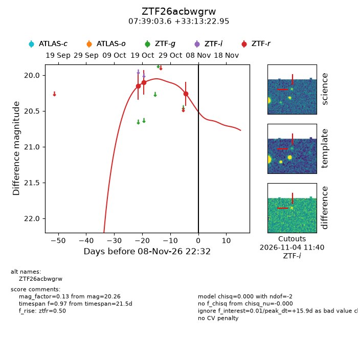
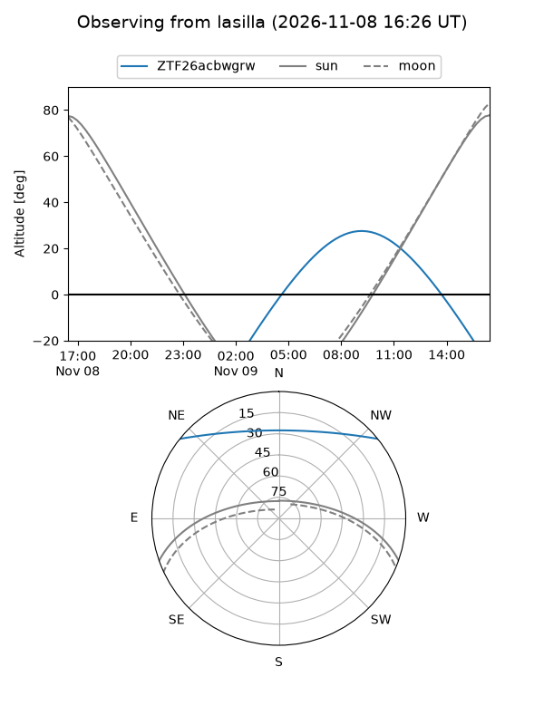
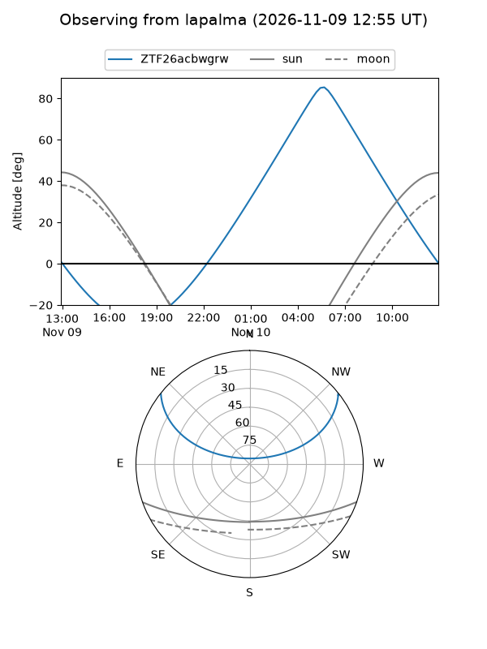
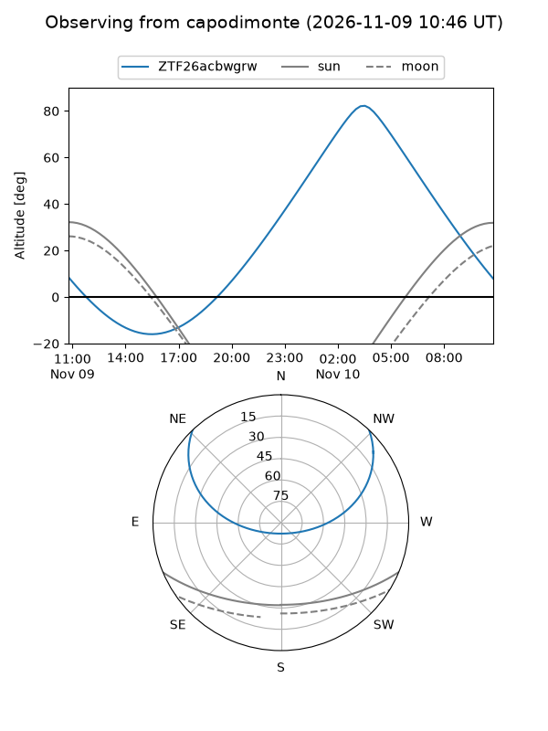
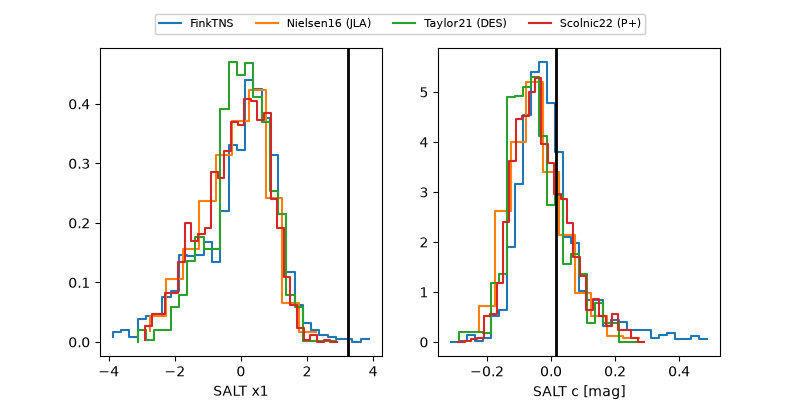

ZTF26acbwgrw
Target ZTF26acbwgrw at 2026-11-09 10:30
Aliases and brokers:
FINK-ZTF: ztf.fink-portal.org/ZTF26acbwgrw
Lasair-ZTF: lasair-ztf.lsst.ac.uk/objects/ZTF26acbwgrw
ALeRCE-ZTF: alerce.online/object/ZTF26acbwgrw
Direct TNS query: direct search
alt names
ZTF26acbwgrw (ztf,fink_ztf)
Coordinates:
equatorial (ra, dec) = 114.7650,+33.22304
equatorial (HMS+DMS) = 07:39:03.61,+33:13:22.95
galactic (l, b) = (186.3861,+23.79253)
Flags:
peak dt: +16.4
Photometry:
last ztfr=20.26
3 ztfr detections
Lightcurve

Visibility



Additional plots
